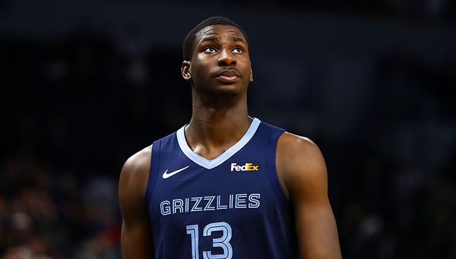
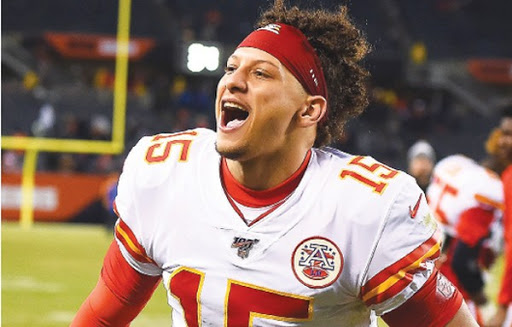
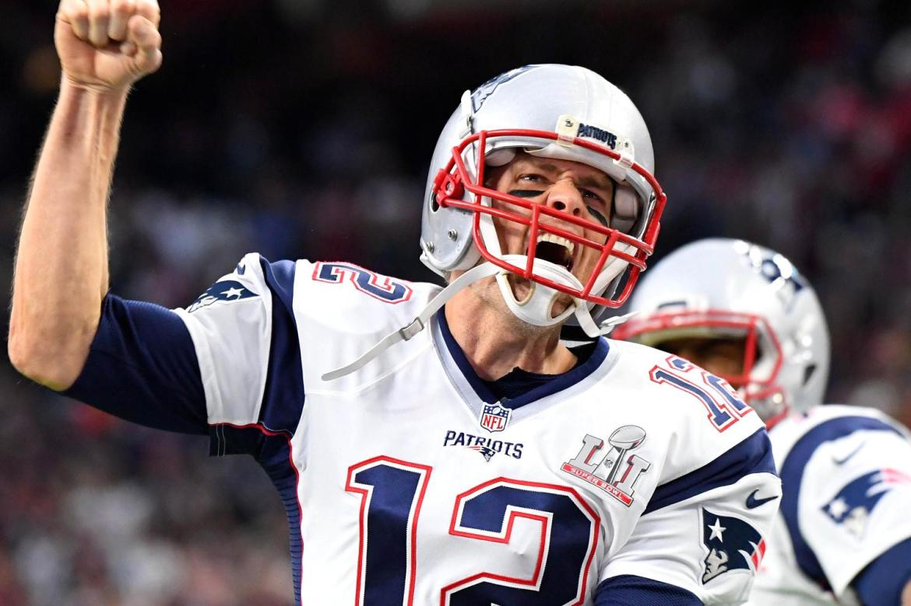

MEJORES JUGADORES DE LA NFL
- Lamar Demeatrice Jackson Jr
Lamar Demeatrice Jackson Jr. (Pompano Beach, Florida, Estados Unidos, 7 de enero de 1997)1 es un jugador profesional de fútbol
americano de Baltimore Ravens de la NationalFootball League (NFL), en la posición de Quarterback con el número 8. Jugó fútbol
universitario en la Universidad de Louisville donde ganó el Trofeo Heisman, Premio Maxwell, Premio Walter Camp y unánimemente
seleccionado como All-American en 2016.
Jackson fue seleccionado pick 32.º por los Baltimore Ravens en la primera ronda del Draft de la NFL de 2018. Pretendido para servir
como jugador de reemplazo de JoeFlacco; por una lesión, Jackson asumió el puesto de quarterback titular.
En su segunda temporada, Jackson ha liderado a los Ravens a un segundo título de división consecutivo.
También ha superado el récord de una temporada en yardas acarreadas como quarterback en la NFL, anteriormente de Michael Vick.
2En la temporada 2019/2020 ganó el reconocimiento como MVP (jugador mas valioso) de la NFL.

- Patrick LavonMahomes
Patrick LavonMahomes II (Tyler, Texas, Estados Unidos; 17 de septiembre de 1995), más conocido simplemente como Patrick Mahomes,
es un jugar profesional de fútbol americano. Juega en la posición de quarterback y actualmente milita en los Kansas City Chiefs
de la NationalFootball League (NFL).
Jugó al fútbol americano universitario en Texas Tech, y fue seleccionado por los Chiefs en el décimo lugar del draft de 2017.
Ha sido campeón de la SuperBowl LIV, siendo elegido el jugador más valioso del partido (MVP por sus siglas en inglés) y es el
segundo quarterback más joven en ganar una SuperBowL.

- Thomas Edward Patrick Brady
Thomas Edward Patrick Brady, Jr. (San Mateo, California, Estados Unidos; 3 de agosto de 1977), más conocido simplemente como Tom Brady,
es un jugador profesional de fútbol americano. Juega en la posición de quarterback y su club actual es New EnglandPatriots de la NationalFootball League (NFL).
Brady jugó al fútbol americano universitario cuatro años en los Michigan Wolverines antes de ser elegido por los Patriots en la sexta ronda
(puesto 199 global) del Draft de la NFL de 2000. Tras un año como suplente de DrewBledsoe, se hizo con el puesto de titular en 2001. Desde entonces,
ha llevado a la franquicia de Massachusetts a seis títulos de SuperBowl (es el jugador que más veces ha ganado la gran final de la NFL),
nueve títulos de la American FootballConference y diecisiete títulos de la AFC Este, todo ello bajo el mando de Bill Belichick como entrenador jefe.
